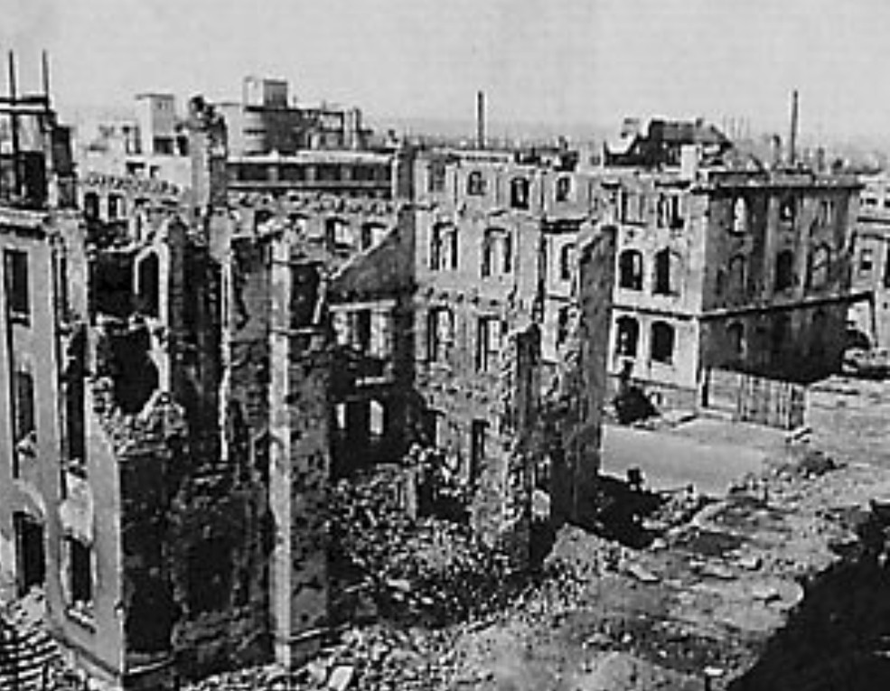

13 – 15 février 1945
Dresde, Saxe – Allemagne
Alliés : Royal Air Force (RAF), United States Army Air Forces (USAAF)
Axe : Allemagne (défense civile, Luftwaffe affaiblie)
Le bombardement de Dresde est l’un des épisodes les plus controversés de la guerre aérienne. En février 1945, alors que le Reich s’effondre, la ville — célèbre pour son architecture baroque et son patrimoine culturel — est frappée par une série de raids massifs menés par la RAF et l’USAAF.
Dans la nuit du 13 février, plus de 700 bombardiers britanniques frappent Dresde en deux vagues successives, utilisant des bombes explosives puis incendiaires. L’incendie se transforme en tempête de feu, atteignant des températures extrêmes et aspirant l’air dans un tourbillon destructeur. Le lendemain, les bombardiers américains reviennent pour cibler les infrastructures ferroviaires et industrielles, aggravant les destructions.
La ville est presque entièrement détruite. Les pertes humaines sont immenses, avec des dizaines de milliers de victimes civiles. Les infrastructures vitales sont anéanties, paralysant la région.
Dresde devient un symbole de la puissance destructrice des bombardements stratégiques. L’événement soulève encore aujourd’hui des débats sur la nécessité militaire de l’opération et son impact sur la population civile. La ville est désormais un lieu de mémoire, rappelant les conséquences humaines de la guerre totale.